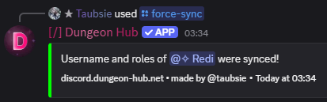

/force-sync ✏️
Description
Recalculates and applies the correct roles and nickname for the selected user. If the user is not linked, only roles are synced.
Arguments
Name | Type | Description | Optional? |
|---|---|---|---|
| User | The target user. | ❌ No |
Examples
Force sync roles and nickname
/force-sync user: @User

See Also
/sync: this command effectively gets executed for another user if
/force-syncis executed./mass-sync ✏️: queue large updates instead.
Verification ✏️: the verification feature is described closer here.
27 December 2025